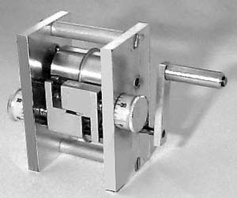

|  |
This is the rubber stripper sold by Ray Harlan of Massachusetts.
The two knobs are adjusted to change the width of the feed (rubber) and the desired final width of the stripped rubber. The stripper comes with a spare set of blades and all other spare parts are readily available. |
|
Owned by a friend of mine, I have used this stripper a fair amount, and it works very well. Mr. Harlan also offers some other tools and supplies for the dedicated indoor enthusiast.
Send a SASE for info to: Ray Harlan
| |
Copyright 1998, Thayer Syme. All rights reserved